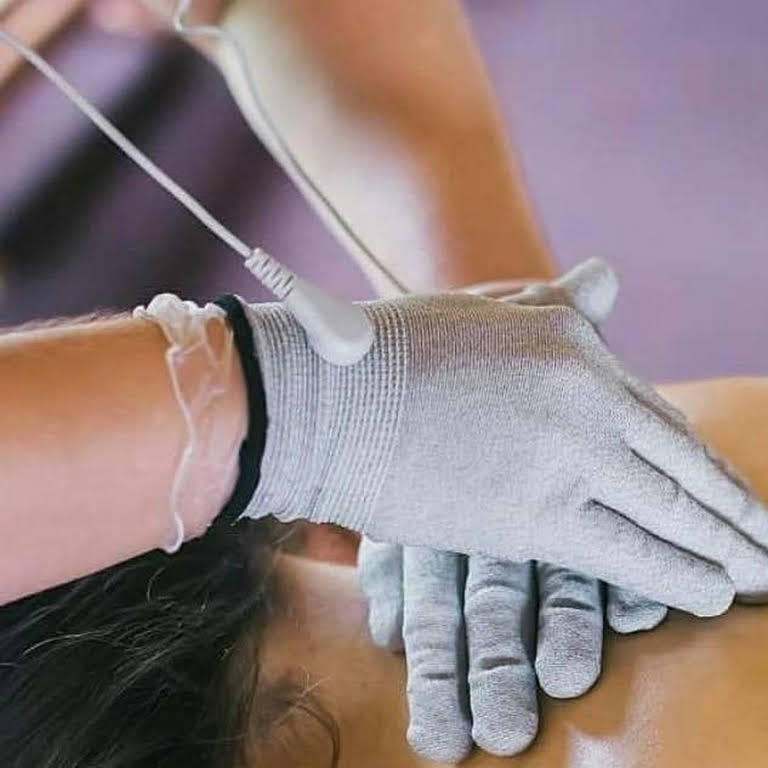
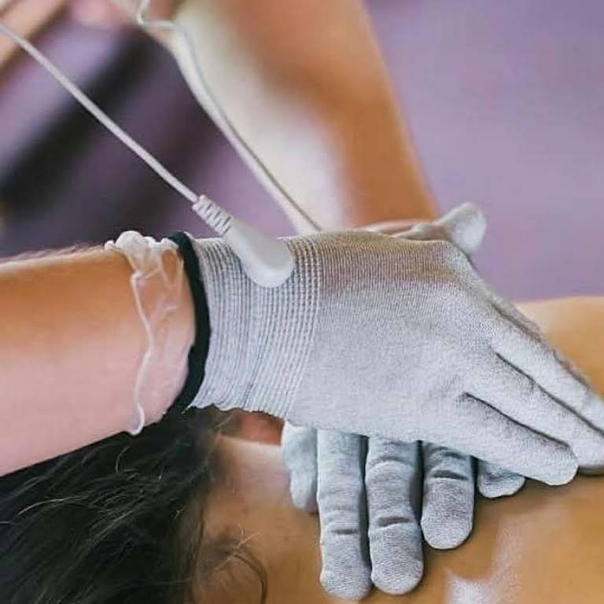
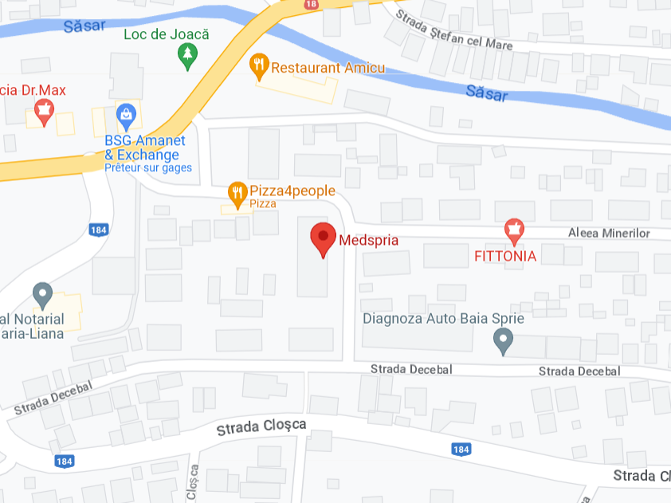

Unde ne puteti gasi ?
Aleea Minerilor 29, Baia Sprie 435100

Ce este terapia Fohow ?
Fohow combină principiile învățăturilor medicinei tradiționale chinezești privind meridianele și organele interne cu cele mai recente realizări ale științei moderne în domenii precum bioinformatica, bioenergetica și neurologia. Simulează efectele fizioterapiei și ale tehnicilor de medicină tradițională chineză, cum ar fi: Acupunctură Gua Sha Tui Na Masaj Moxibustie Terapia cu vacuum.
Masajul meridian oferă un efect fizioterapeutic rapid și tangibil datorită impactului direcțional asupra punctelor biologic active. Acesta curăță instantaneu meridianele, îmbunătățește circulația sângelui, crește energia corpului și restabilește echilibrul Yin-Yang al organelor interne. Poate fi utilizată pentru a preveni și trata bolile și pentru a menține o stare de sănătate bună.